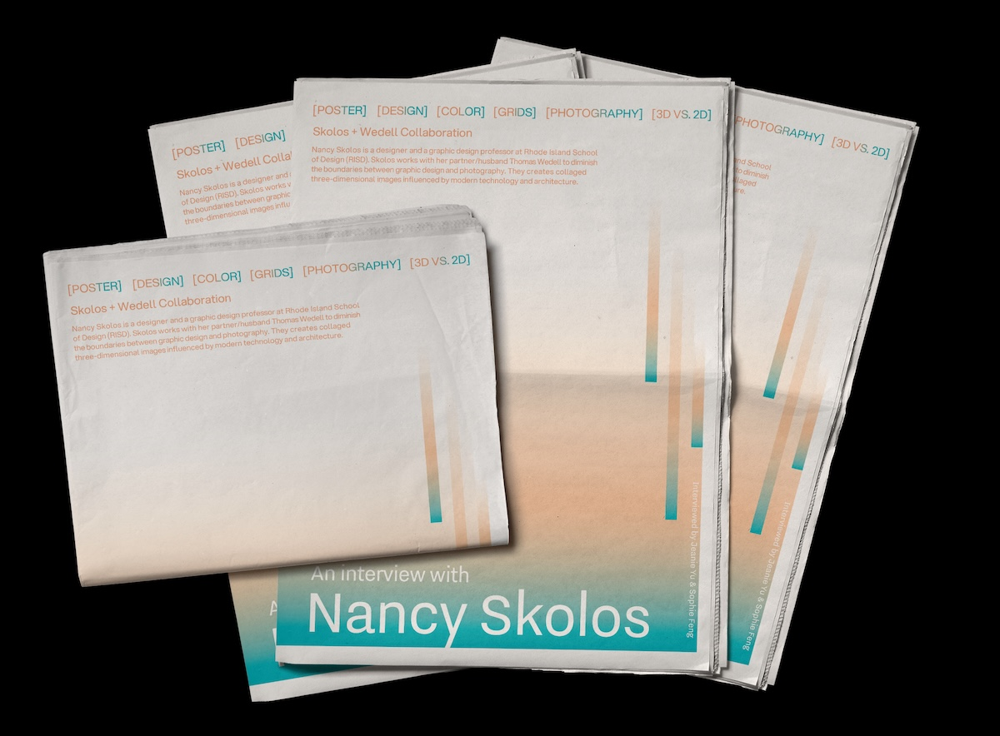
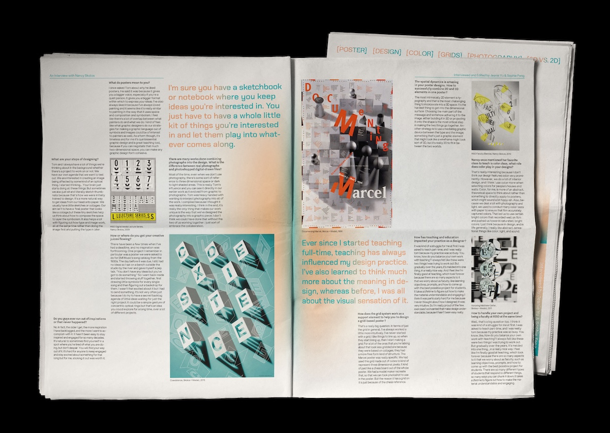
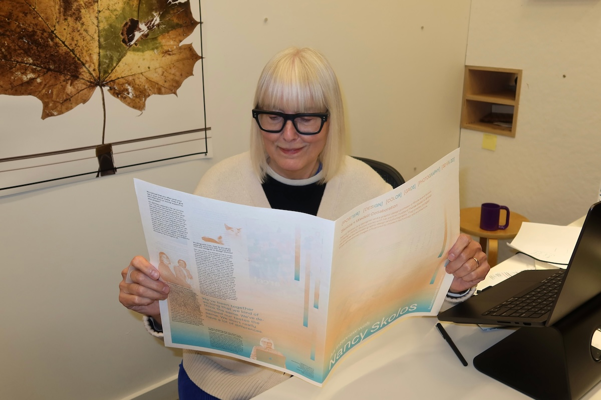

An interview project with Graphic Designer–Nancy Skolos discusses her approach to designs, skillfully combining 2D and 3D elements, typography, and photography into posters. She reflects on blending traditional design techniques with modern, experimental approaches and shares insights on staying consistently inspired over decades. Nancy also discusses the role of education in her career, both as a teacher and a learner. Her thoughtful perspective highlights the evolving design and its profound connection to both personal and professional growth.


